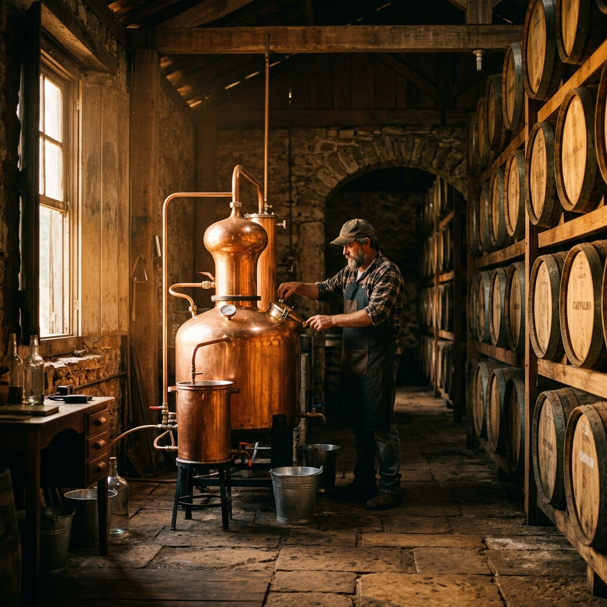
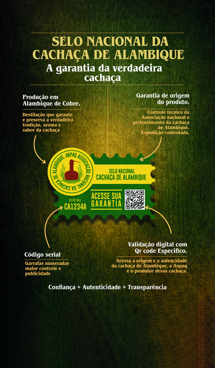

Ao escolher, valorize o que é nosso. Essa é a Garantia de uma cachaça de alambique autêntica, com origem, tradição e identidade genuinamente brasileira. Dê a preferência a um produto Brasileiro.
Nem toda cachaça é produzida em alambique de cobre e por bateladas.
Nem toda bebida preserva a tradição brasileira.
Nem toda cachaça faz o corte da Cabeça, do Coração e da Calda separando-as.
Conheça o que faz a diferença
SELO NACIONAL
da Cachaça de Alambique
Pertencimento + Confiança + Origem + Autenticidade e Transparência

A ANPAQ — Associação Nacional da Cachaça de Alambique — nasceu da união de produtores para proteger o setor, valorizar e certificar a autenticidade das cachaças de alambique brasileiras. O Selo Nacional criado este ano foi apresentado oficialmente em abril de 2026, na Universidade Federal de Lavras (UFLA), e lançado na Expocachaça 2026, atendendo uma demanda por identificação, pertencimento e mostrando em cada rótulo a origem desse nosso produto único, genuíno e de extrema qualidade.